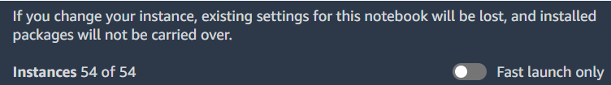

Amazon Web Services (AWS)* and Intel have been collaborating for more than 16 years to develop, build, and support cloud services. The collaboration also focuses on AI software and hardware integration. This article focuses on how to use Intel-optimized AI software on AWS for classical machine learning and deep learning.
Summary of Intel® AI Analytics Toolkit (AI Kit)
The Intel AI Analytics Toolkit (AI Kit) allows data scientists, developers, and researchers to use AI tools and frameworks to accelerate end-to-end data science and analytics pipelines on Intel® architecture. The components are built using oneAPI libraries for low-level compute optimizations. This toolkit maximizes performance from preprocessing through machine learning and provides interoperability for efficient model development.
As of February 2023, the AI Kit has optimizations for the following frameworks and libraries:
- TensorFlow*
Starting with TensorFlow 2.9, the optimizations by Intel are up-streamed automatically to the original distribution. For TensorFlow versions between 2.5 and 2.9, Intel optimizations can be enabled by setting the environment variable: TF_ENABLE_ONEDNN_OPTS=1. Intel® Extension for TensorFlow*, an extension plug-in based on TensorFlow PluggableDevice interface, enables the use of Intel GPUs with TensorFlow and facilitates the use of additional features such as Advanced Auto Mixed Precision (AMP) and quantization.
- PyTorch*
Most optimizations are already up-streamed to the original distribution of PyTorch. For an extra performance boost on Intel hardware, such as Intel CPUs and GPUs, the Intel® Extension for PyTorch* is available.
- scikit-learn*
With Intel® Extension for Scikit-learn*, you can accelerate your scikit-learn applications and still have full conformance with all scikit-learn APIs and algorithms. Intel Extension for Scikit-learn is a free software AI accelerator that brings up to 100X acceleration across a variety of applications.
- XGBoost
In collaboration with the XGBoost community, Intel has been directly upstreaming many optimizations for XGBoost. These optimizations provide superior performance on Intel CPUs. To achieve better inference performance, XGBoost models can be converted using daal4py, a tool created to give data scientists the easiest way to use the Intel® oneAPI Data Analytics Library (oneDAL).
- Modin*
Modin* is a drop-in replacement for pandas. This enables data scientists to scale to distributed DataFrame processing without any API code-related changes. Intel® Distribution of Modin* adds optimizations to further accelerate processing on Intel hardware.
Additionally, Intel also offers:
Get Started
Amazon SageMaker*
Amazon SageMaker* is a platform that enables developers to create, train, and deploy machine learning models in the cloud. To take advantage of Intel AI software optimizations in SageMaker, you must set the instance type behind Amazon SageMaker services (for example, SageMaker Studio notebooks, training jobs, or endpoints) based on Intel hardware. In Table 1, you can see the description of all AWS instances available in SageMaker Studio as of February 2023. To change the instance to a different one from Table 1 in SageMaker Studio, turn off the Fast launch only option (usually turned on by default), to see all available instances.

Most tools available in the AI Kit can be installed through conda* or PyPI (you can find more details on installing external libraries and kernels in SageMaker notebook instances in this guide). Below is a quick list of installation instructions for the AI Kit components (you must go through the installation guide for each tool to make sure you fulfill the software and hardware requirements).
- Intel® Distribution for Python*
conda install -c https://software.repos.intel.com/python/conda/ python (This distribution does not contain basic packages such as NumPy.)
or
conda install -c https://software.repos.intel.com/python/conda/ intelpython3_core (This installation option includes NumPy and other basic packages.)
or
conda install -c https://software.repos.intel.com/python/conda/ intelpython3_full (This is the most complete distribution of Python that, in addition to basic packages, includes libraries such as scikit-learn, scikit-learn extension, XGBoost and daal4py.)
- Intel® Extension for TensorFlow*1
GPU:
pip install tensorflow==2.11.0
pip install --upgrade intel-extension-for-tensorflow[gpu]
CPU:
pip install tensorflow==2.11.0
pip install --upgrade intel-extension-for-tensorflow[cpu]
- Intel Extension for PyTorch2
GPU:
python -m pip install torch==1.13.0a0 -f https://developer.intel.com/ipex-whl-stable-xpu
python -m pip install intel_extension_for_pytorch==1.13.10+xpu -f https://developer.intel.com/ipex-whl-stable-xpu
CPU:
pip install intel_extension_for_pytorch
or
pip install intel_extension_for_pytorch -f https://developer.intel.com/ipex-whl-stable-cpu
- Intel Extension for Scikit-learn
pip install scikit-learn-intelex
or
conda install -c conda-forge scikit-learn-intelex
- Intel Optimization for XGBoost
pip install xgboost
pip install daal4py (daal4py is used to optimize XGBoost models and speed up inference on Intel architecture)
- Modin
pip install modin[all] (open -source Modin package, to which Intel also heavily contributes and maintains)
or
conda install -c https://software.repos.intel.com/python/conda/ modin-all (Intel® Distribution of Modin*)
- Intel Neural Compressor
pip install neural-compressor
or
conda install -c https://software.repos.intel.com/python/conda/ neural-compressor
Also, check out the quick start guide to take advantage of Intel AI optimizations for popular frameworks.
Legend:
As most of Intel’s software optimizations use Intel® Advanced Vector Extensions 512 (Intel® AVX-512), it is necessary to choose an instance based on Intel Xeon Scalable processors to see the performance boost. To specifically take advantage of the deep learning optimizations available in the AI Kit, Intel Deep Learning Boost (Intel DL Boost) (VNNI), Intel AVX-512 with FP16 instruction set or Intel® Advanced Matrix Extensions (Intel® AMX) with bfloat16 instructions are required as these instructions are leveraged by the software to optimize deep learning training and inference workloads. The 4th generation Intel Xeon Scalable processor is the first generation that supports Intel® AMX with bfloat16 along with Intel® AVX-512 with FP16. Therefore, we recommend using instances based on 4th generation Intel Xeon Scalable processors for deep Learning when they become available in SageMaker. To ensure software compatibility, make sure to check the software requirements of the optimization tool and check that it is compatible with the chosen image in SageMaker. Here is a description of current available images in SageMaker. This link describes how to create and import your custom image in SageMaker.
AWS EC2* Instances Powered by Intel Processors and Accelerators for AI
In November 2022, Amazon announced the first EC2 instances powered by 4th generation Intel Xeon Scalable processors. These are the first AWS instances powered by Intel to support Intel AMX with bfloat16 along with Intel® AVX-512 with FP16. Check out this guide to use AI software optimizations directly on AWS instances.
AWS is also the only cloud service provider, as of February 2023, that offers an instance type (DL1) based on Habana Gaudi*, a type of integrated circuit chip customized for deep learning (currently the instance is only available in selected regions).
Intel® Optimization for TensorFlow* on AWS*
Additionally, if you are particularly interested in TensorFlow, on the Intel® Developer Zone platform you can find several performance analyses on AWS. This article compares the performance benefits of TensorFlow 2.8 with oneDNN optimizations on AWS C6i instance types and TensorFlow 2.8 without oneDNN, while this one compares the inference performance using TensorFlow 2.9 for 3rd gen Intel Xeon processor instance type and 3rd gen AMD EPYC instance type.
AWS Marketplace
AWS Marketplace provides a channel for independent software vendors (ISVs) and AWS consulting partners to provide their solutions to AWS customers for free or for a cost. Since Intel AI Analytics Toolkit is free, there are no software fees associated with its components offered on AWS Marketplace.
There are several delivery methods for the products available in the marketplace. More details on this can be found here.
Classical Machine Learning:
- Scikit-learn
Scikit-learn* with Intel® oneAPI Data Analytics Library (oneDAL)
Scikit-learn* with Intel® oneAPI Data Analytics Library (oneDAL) is a daal4py optimized version of scikit-learn with a set of Python* modules for machine learning and data mining. To optimize workloads based on the latest version of scikit-learn, use Intel® Extension for Scikit-learn*.
Delivery Method: Container
- XGBoost
Intel® Optimization for XGBoost*
XGBoost is an optimized distributed gradient boosting library designed to be highly efficient, flexible, and portable. It implements machine learning algorithms under the Gradient Boosting framework. XGBoost provides a parallel tree boosting (also known as GBDT, GBM) that solves many data science problems in a fast and accurate way.
Delivery Method: Container
Deep Learning:
- TensorFlow
Intel Optimization for TensorFlow with Jupyter Notebook
This is a binary distribution of TensorFlow with Intel® oneAPI Deep Neural Network Library (oneDNN) primitives.
Delivery Method: Container
Intel Optimization for TensorFlow Training
This includes the Python* 3 interpreter and the following preinstalled wheels and libraries: Intel® Optimization for TensorFlow, Open MPI, Horovod*.
Delivery Method: Container
Intel Optimization for TensorFlow Serving
This is a flexible, high-performance serving system for machine learning models, designed for production environments.
Delivery Method: Container
TensorFlow Perf Comparison with Jupyter Notebooks
This is a container with Jupyter* Notebooks and preinstalled environments for analyzing the performance benefit from using Intel Optimization for TensorFlow with oneAPI Deep Neural Network Library (oneDNN).
Delivery Method: Container
Intel Optimization for TensorFlow on Ubuntu
Intel Optimization for TensorFlow on Ubuntu Container 2.9.1-ubuntu-22.04 contains support for Intel Optimization for TensorFlow version 2.9.1 with Ubuntu 22.04 and Python 3.10.
Delivery Method: Container
BERT FP32 Training and oneDNN with TensorFlow
A container based on Ubuntu 20.04 that has all components necessary to train or re-train BERT Large with FP32 precision using Intel Optimizations for TensorFlow 2.3. Includes MPI 2.1.1 and Horovod* 20.3.
Delivery Method: Container
- PyTorch
Intel Extension for PyTorch
This extends the original PyTorch framework by creating extensions that optimize performance of deep learning models. This container contains PyTorch v1.12.100 and Intel Extension for PyTorch v1.12.100.
Delivery Method: Container
- OpenVINO™
Intel® Distribution of OpenVINO™ Toolkit
This is a comprehensive toolkit for quickly developing applications and solutions that solve a variety of tasks including emulation of human vision, automatic speech recognition, natural language processing, recommendation systems, and many others.
Delivery Method: Amazon Machine Image
- BigDL
BigDL with Apache Spark*
This AMI (Linux/Unix) includes an Apache Spark instance, the Analytics Zoo and BigDL library, Jupyter Notebook, and Python, which you can use to train deep learning models.
Delivery Methods: Amazon Machine Image
BigDL Text Classifier on Analytics Zoo
Build a text classification model with BigDL and Analytics Zoo. BigDL is a distributed deep learning library created specifically to train and use deep learning models in Apache Spark.
Delivery Methods: Amazon SageMaker
- Other
Deep Learning Reference Stack
The Deep Learning Reference Stack is an integrated, highly performant open source stack optimized for Intel Xeon Scalable platforms.
Delivery Method: Amazon Machine Image
The new additions in the Marketplace can be found by filtering the results by Publisher: Intel and Intel AI. Also, you can filter by delivery methods.
What’s Next?
To stay up to date with new marketplace entries, new instances and any relevant collaboration with AWS, you can follow this partner showcase page. We encourage you to learn more about and incorporate Intel’s other AI and machine learning framework optimizations and end-to-end portfolio of tools into your AI workflow. Also, visit Intel’s AI and machine learning page to learn about Intel’s AI software development resources to prepare, build, deploy, and scale AI solutions.
For more details about the new 4th gen Intel Xeon Scalable Processors, visit AI Platform where you can learn about how Intel is empowering developers to run end-to-end AI pipelines with Intel Xeon Scalable Processors.
Useful Resources